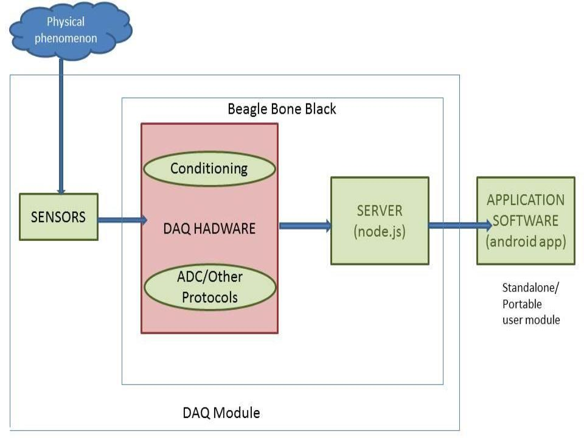

This document covers the various the aspects proposed for developing a Low Cost Modular Data Acquisition(DAQ) System. For more, http://en.wikipedia.org/wiki/Data_acquisition
Despite the widespread use of Data Acquisition in the labs and industries, it is quite difficult to find a DAQ system which is cost effective and at the same time, provides a highly configurable environment.
To develop a low cost Data Acquisition System (DAQ) which is configurable and user friendly that operates by plugging in sensor modules and displaying the data on the Aakash Tablet.
- Engineers and scientists use data acquisition (DAQ) products for validating and verifying a design prototype, teaching in a university lab, diagnosing a machine malfunction, or controlling a manufacturing process etc.
- But the products available are quite expensive and use proprietary softwares which further add to the cost. Also, those products that are cost effective do not provide a high amount of user customization.
- Cost can be reduced effectively by providing an open source software instead of using proprietary softwares like LabView and reducing the hardware used.
- The device can be made compatible with a wider range of existing sensors as well as the sensors that may be available in the future.
- User customization can be increased by allowing the user to perform various calculations and manipulations on the data received from the sensors.
- An application can be developed to work on any Android based device making the facility available to students all over the country.
Block Diagram
A Sensor is a device that converts a physical parameter (for example: temperature, blood pressure, humidity, speed, etc.) into a corresponding electrical signal. To measure a physical quantity these sensors give outputs in various forms like voltage,current,resistance,capacitance,etc. Signal Conditioning is required when data acquired by sensors is not suitable with the DAQ hardware.In most of the cases the signal may be fitered or amplified. The sensors may work on several communication protocols such as UART,SPI,I2C to give a measurement of the required physical parameters.The data from the sensors after conditioning in sent to the microcontroller in the Beaglebone black which acts as the Data Acquisition Hardware.
- The beaglebone black will act as a microcontroller as well as a server for broadcasting the acquired data.
- For this purpose, bonescript.js, a node.js library will be used for scripting purposes. It is specially optimized for Beagle family and has many in-built functions that interact with the haradware which make the whole scripting process easy, comfortable and efficient.
- The BoneScript Library runs in Node.JS. It can be directly run on the board using the ‘node’ interpreter or the Cloud9 IDE that invokes the ‘node’ interpreter or by using the bonescript.js script within browser via remote procedure calls using Socket.io and served up by the web server running on your Beagle.
- Access to the library functions is provided through the “require(‘bonescript’)” function call. The call returns an object containing all of the functions and constants exported by the library.
- Apart from this, the BeagleBone server will also act as a database for the sensors previously used on the board which will have the all the information related to a sensor – model name, protocol used, formula used for processing data etc.
- The main motivation of the project is that the user need not worry too much details of scripting the beaglebone and here the android application plays a major role.
- The application will allow a user to enter parameters like pins to be read from the beagle board and the formula to be used for processing the data.
- For enabling multiple user access, the configurations file database will also be built which can make further use of the sensors easy and hassle-free.
- These configurations will be stored locally on the device as well as sent on the beagle server for easy access to other users.
- As and when the pins to be read from the board are selected, a request will be sent to the server and the corresponding response will be manipulated by the configuration either entered by the user or fetched from the configurations database.
- Sensors will be attached to the corresponding pins of the board as per the communication protocols it follows.
- The data from the pins is read directly using inbuilt bonescript functions [analogRead() ] and is made available to the server constructed on node.js.
- This data is then relayed to the tablet(client) via wifi router using socket.io on the server side and Gottox java-client libraries on the client side.
Workflow of the application
- The Beagle Bone black has a limited number of pins , thus limiting the number / type of sensors that can be attached. An additional USB peripheral board will have to be connected to the board and configured accordingly.
- The protocols for communication between the sensors and server are limited on the BeagleBone Black. Other protocols that may come in the future or that are unsupported by the Beagle version are not addressed by our system.
- Though a USB cable will be the most efficient / foolproof channel to transfer data from the board to the tablet, there are limitations on the client side in that there is limited support for android platform.
- Using a wifi dongle will put geographical constraints on the functioning of the DAQ system.
We are modifying the current DAQ systems built on BeagleBone Black board by integrating Data aquisition , control and server side work on a single board i.e. the BeagleBone black.
- A standalone android application that can be installed on any tablet or mobile device running on Android (preferably version 2.2 or higher).
- Set of scripts written in bonescript.js which will enable the beagle bone server to interact with the android application.
The system that we plan to build will be compatible with a wide range of existing sensors as well as the sensors that may be available in the future. The user will be able to perform any number of calculations and manipulations on the data.
Thus in conclusion, we plan to build an efficient Data Acquisition system and supporting Android app that is cost efficient and highly customizable thus giving the user the best working experience possible.
- http://beagleboard.org/Support/BoneScript
- http://en.wikipedia.org/wiki/Data_acquisition
- http://www.edn.com/electronics-products/electronic-product-reviews/other/4378779/NI-debuts-WiFi-DAQ-systems
- http://www.ni.com/white-paper/3536/en/
- http://brachestudios.com/beaglebone-with-usb-data-acquisition-hardware/
- http://beagleboard.org/static/beaglebone/a3/Docs/Hardware/BONE_SRM.pdf
- http://elinux.org/Beagleboard:Cape_Expansion_Headers